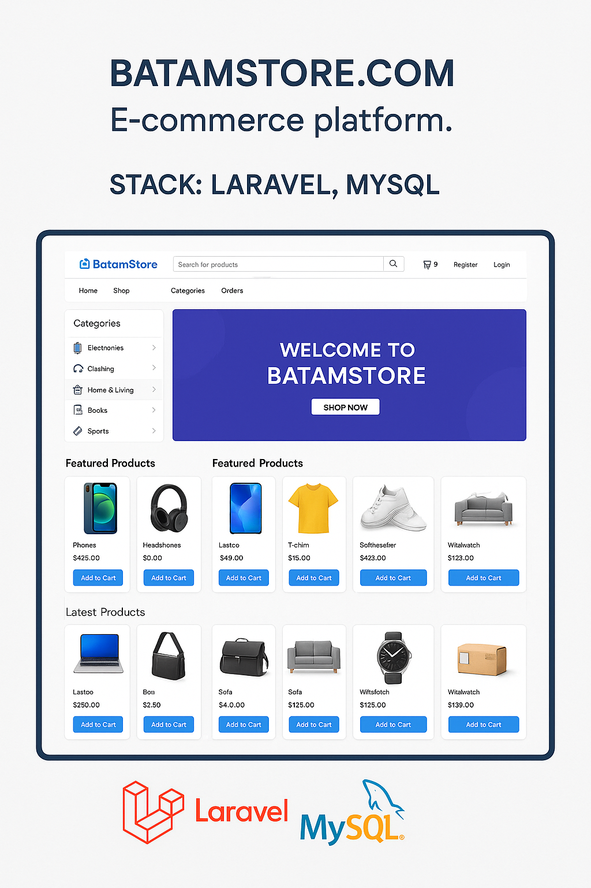
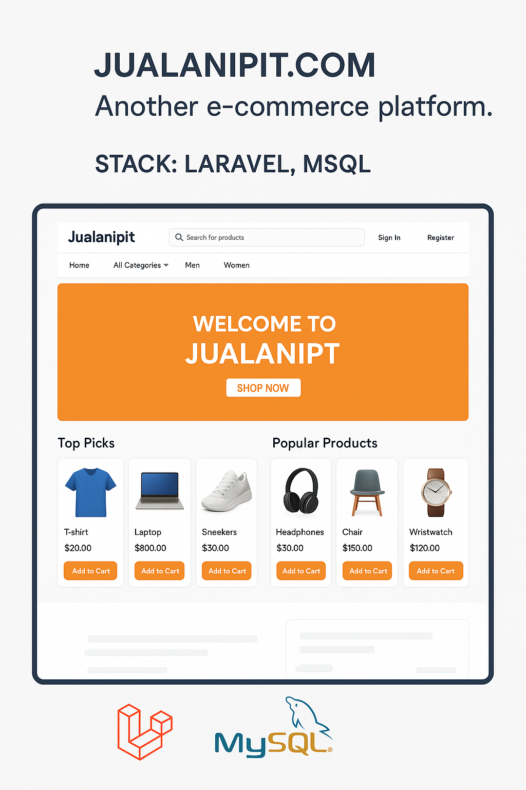

About Me
Experienced technology developer with 12+ years in IT systems development, focusing on information
system solutions in the public sector. Proven success in system implementation, maintenance, and
cross-departmental coordination. Most recently, as Senior Information Systems Engineer at Badan
Pengusahaan Batam (BP Batam), led system enhancements and operational support for the licensing
systems, ensuring high service availability and user satisfaction. Skilled in managing projects, improving
system performance, and delivering impactful digital solutions for government services.
Skills
- Backend Development: PHP (Laravel), REST APIs, Modular & Monolithic Architecture
- Server & Deployment: WebLogic, Red Hat Enterprise Linux, Ubuntu Server, CentOS, Apache HTTP
Server, Nginx
- Database Management: Oracle, MySQL, PostgreSQL
- DevOps & CI/CD: GitLab CI/CD, Deployment Automation, System Monitoring
- System Design & Architecture: Business Process-Driven Systems, Service-Oriented Architecture,
Secure Role-Based Access
- Testing & Debugging: Functional Testing, Integration Testing, Troubleshooting & Performance Tuning
- Project Management & Collaboration: Project Coordination, Vendor Management, Cross-Functional
Team Leadership, Technical Documentation
- Public Sector System Development: Licensing Systems, Administrative Information Systems, Asset &
Payroll Systems
Experience
Badan Pengusahaan Batam (BP Batam) - Fullstack Developer | Information Systems Engineer
Dec 2013 - Present
- Led the end-to-end development, maintenance, and optimization of public sector information
systems, primarily in licensing and internal services.
- Coordinated system enhancement projects, including requirement analysis, technical
implementation, and stakeholder reporting.
- Managed server deployment, system integration, and infrastructure optimization for seamless
service delivery.
- Successfully delivered 10+ public service applications used by 500+ active users, achieving 95%
user satisfaction.
- Improved system issue resolution rate by 30% and reduced feature deployment time by 20%
through workflow optimization.
- Increased server uptime to 99.5%, reducing service response time by 35% via infrastructure
improvements.
PT. Barelang Konsultindo Mandiri - Software Engineer
Oct 2012 - Nov 2013
- Developed and maintained SIMBA WEB, a government inventory system for managing
government assets.
- Built PERSO WEB, a payroll management system for salary processing and financial reporting.
- Designed and implemented business process-driven solutions to support government operational
workflows.
- Delivered 2 major government systems across multiple provincial and district agencies on time.
- Increased payroll processing efficiency by 40%, minimizing errors and improving speed.
- Ensured 100% data integrity and compliance with public sector IT standards throughout
projects.
Projects

batamstore.com
E-commerce platform.
Stack: Laravel, MySQL
Visit Site

jualanipit.com
Another e-commerce platform.
Stack: Laravel, MySQL
Visit Site
Education
Electronic Engineering Polytechnic Institute of Surabaya (PENS-ITS)
Bachelor Degree, Informatics Engineering (3.67) - 2010-2012
State Polytechnic of Batam
Diploma 3, Informatics Engineering (3.87) - 2007-2010